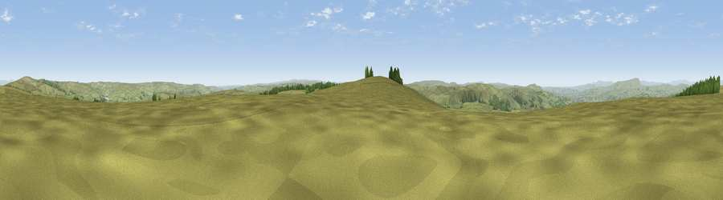

Viewpoint near Cornholme
#12861 in England · top 19% of its area beats it · near CornholmeThe view, rendered

A 360° render of this exact spot computed from the terrain model, tree cover and land cover — summer colours, afternoon light, calibrated against photographs of famous viewpoints. Real trees, hedges and buildings will differ in detail.
The panorama
Grey silhouette: terrain skyline in each direction (720 bearings, Earth curvature and refraction included). Dashed green: skyline with trees (+15 m) and buildings (+8 m) as obstacles. Blue strip: how far the ground is visible on each bearing.
Where the view opens
Wedge length = distance to the farthest visible ground on that bearing (vegetation-aware). Rings at 10, 25 and 50 km.
What fills the view
91% grassland · 7% woodland · 1% built-up
Angular shares of the visible panorama (visual magnitude), not map area. Landscape diversity 0.15 (0–1 Shannon).
Key numbers
More beautiful places nearby
The staircase of upgrades: each row has a higher view potential than everything closer. Driving times are estimates from straight-line distance, calibrated against real road routing — check an actual route before setting out.
| Place | Direction | Drive | Score |
|---|---|---|---|
| Hoof Stones Height | SSW · 1 km | ~2 min | 64.0 |
| Thieveley Pike | WSW · 5 km | ~11 min | 66.2 |
| Viewpoint near Weir | WSW · 6 km | ~13 min | 66.8 |
| Lad Law (Boulsworth Hill) | NNE · 6 km | ~13 min | 71.5 |
| Great Hameldon | W · 12 km | ~23 min | 74.2 |
| Viewpoint near Edenfield | SW · 14 km | ~26 min | 77.5 |
| Darwen Hill | WSW · 25 km | ~40 min | 80.7 |
| White Brow | SW · 31 km | ~48 min | 82.9 |
53.76381, -2.13004 · source: screening · position refined by local search. Computed location — check access rights before visiting.